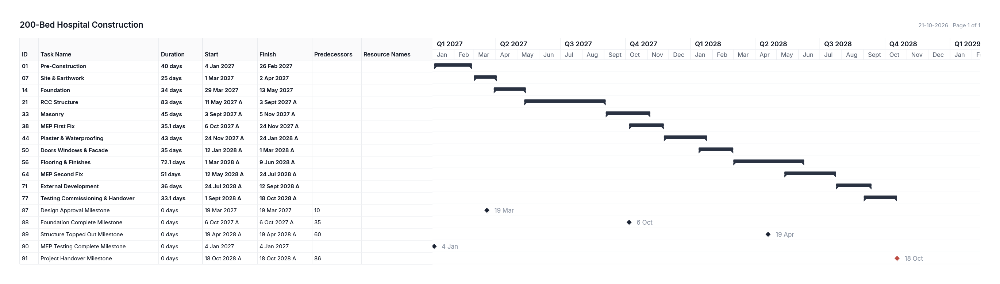
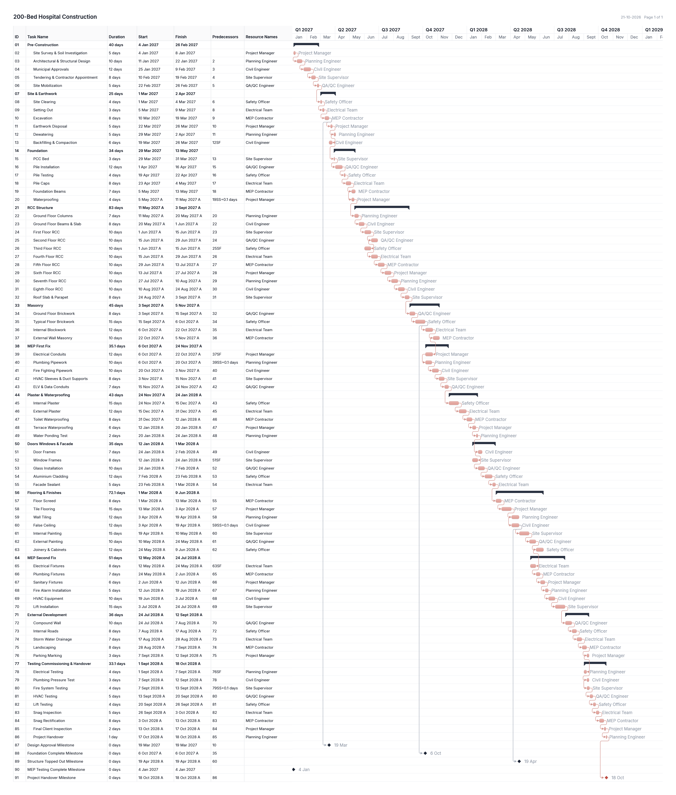

The Gantt chart shows every task as a bar on a calendar. The hospital project starts on 4 Jan 2027 and finishes on 18 Oct 2028: 467 working days. Both charts below were exported directly from Planora with the critical path shown in red.

| Milestone | Date |
|---|---|
| Design Approval Milestone | 19 Mar 2027 |
| Foundation Complete Milestone | 6 Oct 2027 |
| Structure Topped Out Milestone | 19 Apr 2028 |
| MEP Testing Complete Milestone | 4 Jan 2027 |
| Project Handover Milestone | 18 Oct 2028 |
Three milestones in the source file are linked to unrelated tasks or a missing task (for example “MEP Testing Complete” points to task UID 100, which is not in the file), so their dates follow those links.
